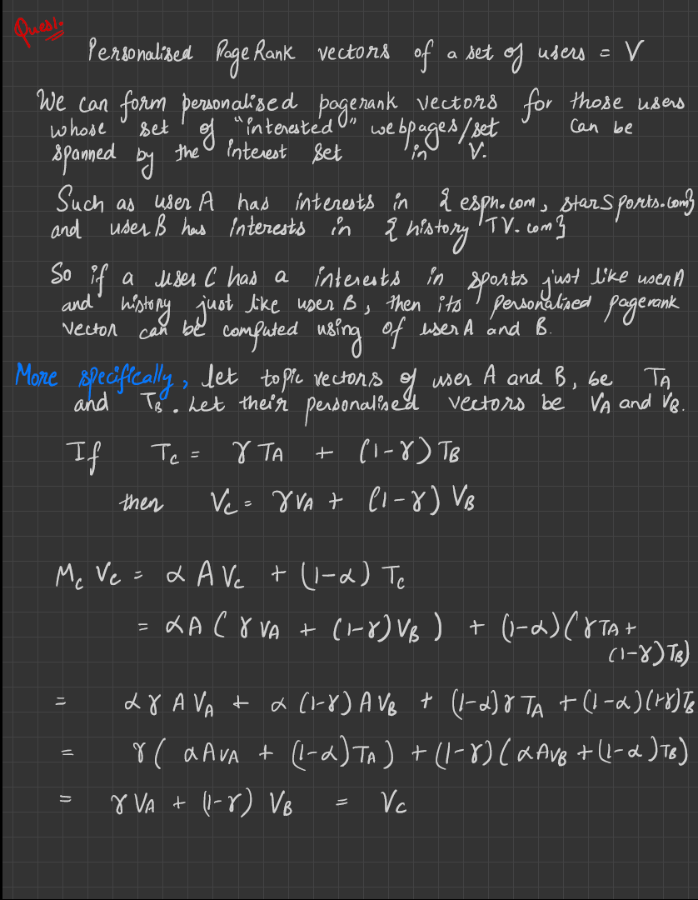
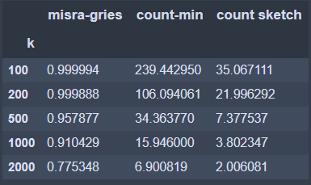
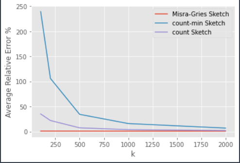

Sachin Yadav 18110148



Average Relative Error Percentage Table

Average Relative Error Plot

Misra-Gries Sketch
Min k for 1% average error is: 72

count-min Sketch
Min w for average error < 1% : 2481

Count Sketch
Min w for average error < 1% : 904

Low-Rank Approximation Error vs k plot

BaseLine Algorithm
alpha = 0.3678348482223803
beta = 0.639915746842154


Comparison